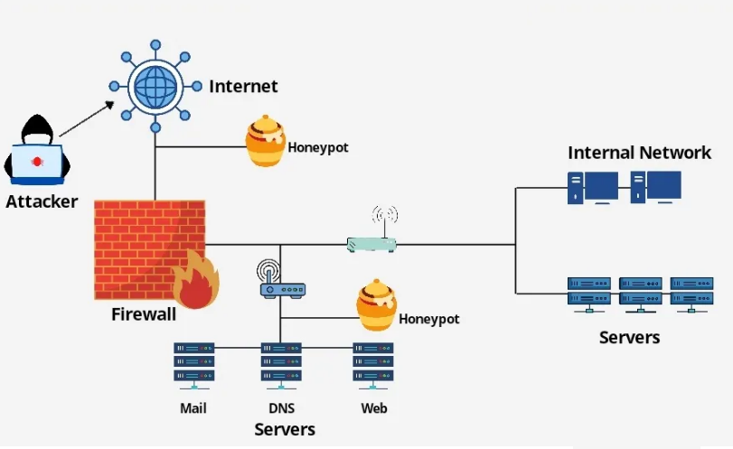
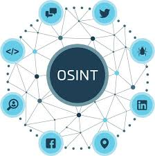

Cybersecurity Analyst specialized in SIEM, Incident Response, and Threat Hunting. Focusing on rapid alert triage, advanced IOC correlation, and reducing false positives to secure enterprise environments.
Cybersecurity Analyst with hands-on SOC internship experience at CyArt Tech. Expert in proactive threat detection, SIEM triage, and rapid incident response workflows.
My analytical approach allowed me to investigate 200+ alerts and successfully reduce false positives by 30% through the deployment of customized MITRE ATT&CK-based detection rules.
Beyond traditional operations, I build and analyze real-world attacker behaviors using honeypots and write robust Python automation to accelerate threat hunting workloads and streamline log correlation.

Deployed and monitored a T-Pot honeypot environment to analyze real-world malicious traffic and attacker behavior.
Built a Cowrie SSH honeypot to study brute-force attempts, username/password trends, and attacker interaction.

Developed a Python-based OSINT and recon automation tool to streamline repetitive investigation tasks effectively.
Created a lab for phishing email investigation, URL analysis, IOC extraction, and incident response practice.
Review my complete background, technical skill sets, and professional experiences in a formal format.
Download PDF